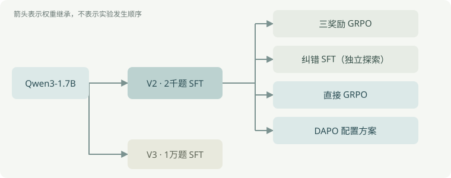
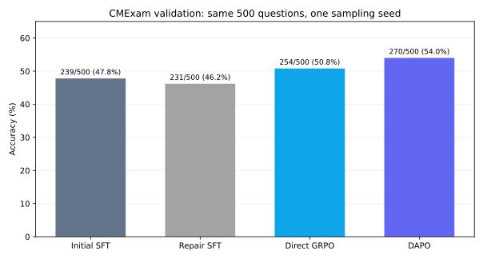
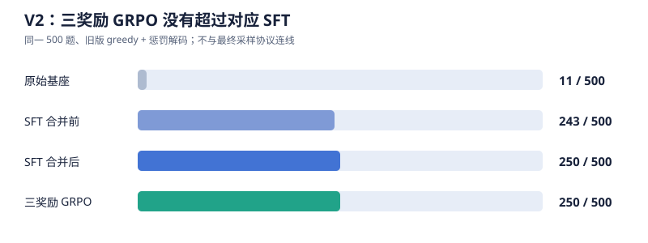

这是我第一次独立推进的后训练项目。问题很直接：SFT 已能让 1.7B 模型按格式作答，GRPO 能否让它真正多答对医学选择题？ 我先试了普通 G=2 的 GRPO，然后三奖励 GRPO，再扩大 SFT 数据，最后比较纠错 SFT、直接 GRPO 和 DAPO 配置方案。
路线

实际尝试顺序是 V2 → V3 → 最终对照。图中的箭头是权重继承：V3 没有接到最终 GRPO/DAPO；纠错 SFT 也没有成为它们的起点。更早的 Qwen2.5-1.5B 实验用于摸索流程，见历史实验。
主要结果
四份逐题 JSONL 的题号与标准答案顺序一致，均按统一评估协议生成。以下数字由复算脚本（仅存于本地）重算，原始映射见证据索引（仅存于本地）。
| 模型 | 答对 / 500 | 格式合格 | 可解析 | 截断 |
|---|---|---|---|---|
| 初始 SFT | 239（47.8%） | 481（96.2%） | 481（96.2%） | 18（3.6%） |
| 纠错 SFT | 231（46.2%） | 483（96.6%） | 483（96.6%） | 16（3.2%） |
| 直接 GRPO | 254（50.8%） | 489（97.8%） | 489（97.8%） | 10（2.0%） |
| DAPO 配置方案 | 270（54.0%） | 485（97.0%） | 485（97.0%） | 15（3.0%） |

格式已基本学会，答题仍是瓶颈。 以 DAPO 为例，15 道格式不合格题即使全部改对，正确率至多再增加 3 个百分点；其余错误不能靠修格式解决。这里的“正确”仅指抽取选项等于题库字母。
同题配对：改对了多少，也改错了多少
| 相对初始 SFT，除最后一行 | 错 → 对 | 对 → 错 | 净变化 | 正确率变化 |
|---|---|---|---|---|
| 纠错 SFT | 31 | 39 | −8 题 | −1.6 个百分点 |
| 直接 GRPO | 35 | 20 | +15 题 | +3.0 个百分点 |
| DAPO 配置方案 | 55 | 24 | +31 题 | +6.2 个百分点 |
| DAPO 相对直接 GRPO | 39 | 23 | +16 题 | +3.2 个百分点 |
| 题号 | 标准答案 | 初始 SFT | 直接 GRPO | DAPO | 现象 |
|---|---|---|---|---|---|
val-3813 |
A | E | A | A | 两条 RL 都改对 |
val-5904 |
B | B | B | D | DAPO 从对变错 |
val-782 |
C | A | D | E | 三阶段均错 |
val-5306 |
C | D | D | 未解析 | DAPO 截断 |
只列题号和字母；这些个例不能证明某题变动的原因。
时间与结论边界
| 训练 | 保存的耗时 | 对应验证正确率 |
|---|---|---|
| 纠错 SFT | 1,158 秒（约 19 分） | 46.2% |
| 直接 GRPO | 10,868 秒（约 3 小时） | 50.8% |
| DAPO 配置方案 | 22,744 秒（约 6 小时 19 分） | 54.0% |
记录的 GPU 为 RTX 4090。DAPO 换了框架并动态重采，实际生成量和实现开销不同；不能把时长比解释成算法固有速度比。两条 RL 的 3.2 个百分点也不是某个 DAPO 组件的消融结论。
完整数字在结果 CSV。
实验设计
数据与边界
任务是 CMExam 中文单选题：输入题干和 A～E 选项，目标是输出解析和唯一答案。原始文件为 train、val、test_with_annotations；来源与哈希见原始清单（原始文件仅存于本地）。500 道 val 用于比较和方案选择；另保留 500 道 test，本次没有用作统一终评。
数据处理先校验题干、选项与答案，按去空白后的题干哈希去重，并从 train 排除 val/test 的同键题。Qwen3 训练另要求非空解析、无保留标签字符、提示词和目标长度不过限。做到的是精确题干去重；没有审计语义近重复、医学答案正确性或解析质量。
| 阶段 | 冻结训练题数 | 来源与取样重点 |
|---|---|---|
| V2 初始 SFT | 2,000 | 有解析题；包含约 200 道正则识别的反向选择题 |
| V2 三奖励 GRPO | 1,000 | 与 SFT 分开的候选池 |
| V3 扩量 SFT | 10,000 | 有解析、长度合格；含约 1,000 道反向选择题 |
| 最终直接 GRPO / DAPO | 共用 2,500 | 从同一冻结训练池出发 |
| 纠错 SFT | 606 | 初始模型四答全错且满足长度条件的题 |
“反向选择题”只是正则覆盖控制，不等于经过人工确认的难度或科室分层。版本间的样本和协议差异见实验索引。
训练怎么分支
V2 用 Qwen3-1.7B、BF16 LoRA（rank 32、alpha 64）训练 2 epochs，目标为 <think>参考解析</think><answer>字母</answer>。其合并权重是最终三条分支的共同起点：
- 纠错 SFT：把四答全错题的标准答案和参考解析再次监督训练；这条探索到此停止。
- 直接 GRPO：每题生成
G=4答，仅按最终字母是否正确给 0/1 奖励；全对或全错组在生成后屏蔽梯度，仍耗费生成计算。 - DAPO 配置方案：同一起点、同一 2,500 题池与 0/1 奖励，在 ms-swift 的 GRPO 入口启用
loss_type=dapo、不对称 clip、动态重采（最多 3 次）、token 级损失和过长过滤。
V3 的 10,000 题 SFT 独立从原始基座启动，不向最终两条 RL 分支提供权重。旧 V2 三奖励 GRPO 则在正确性以外增加格式奖励和答对后才给的解析奖励；具体数值留在历史页。
同一分数的定义
最终四阶段都在同一 500 道 val 题上，以 BF16 非量化模型、Qwen3 thinking 模板、temperature=0.6、top_p=0.95、seed=42、最多 1,536 个新 token 评估；没有重复或频率惩罚。训练中每约 10% 的固定 10 题监控只用于观察，不能替代 500 题结果。
V2/V3 旧结果使用 greedy 且带重复、频率惩罚；更早 Qwen2.5 还混有量化与 FP32 复评。不同协议的正确率不连成一条训练曲线。各结果的 protocol_id 见数值表。
历史探索
更早的 Qwen2.5-1.5B 先用于跑通流程：32 题 smoke 的基座、SFT、GRPO 都答对 17 题。正式 SFT 的旧协议合并前、后为 302/500、274/500，FP32 复评为 331/500；G=2/G=8 的 FP32 复评分别为 332/500、334/500。
V2：先检验三奖励
medical_grpo2.ipynb（原始文件仅存于本地）从 3,000 道 SFT 候选与 1,500 道 GRPO 候选中冻结 2,000 / 1,000 题。Qwen3-1.7B 的 BF16 LoRA 使用 rank 32、alpha 64；SFT 两轮 500 步，保存耗时 405.5 秒。GRPO 为 G=4、一轮 500 步，奖励是格式 0.2 + 正确性 1.0 + 答对后解析 0.3，解析由远程裁判参照标准答案与参考解析评分。末次续训调用记录 3,691 秒；曾从 checkpoint-100 恢复，完整总耗时未记录。
下图只画同一旧版 greedy 协议下的 500 道验证题；该协议带重复和频率惩罚，不与最终采样协议画在一条曲线上。

| 阶段 | 答对 / 500 | 格式合格 | 可解析 |
|---|---|---|---|
| 基座 | 11 | 0 | 13 |
| SFT 合并前 | 243 | 499 | 499 |
| SFT 合并后 | 250 | 499 | 499 |
| 三奖励 GRPO | 250 | 498 | 498 |
基座的 11/500 是严格输出解析规则下的分数，不能理解成医学知识只有 2.2%。SFT 合并前后差 7 题，未做只改变“合并”的受控实验。三奖励 GRPO 没有净增，但也不能单凭它认定解析奖励无效。
当时对 1,500 道候选题每题采样四答：全错 366、有对有错 769、全对 365。它是候选池诊断，不是 1,000 道冻结训练题的梯度统计；提示了全错组缺正确信号的问题，不能解释全部验证结果。逐题复算值与证据索引（仅存于本地）保留核对路径。
V3：扩大 SFT 数据，没有接续到最终 RL
medical_grpo3.ipynb（原始文件仅存于本地）从 15,000 道候选题中找到 12,792 道有解析；再按解析、标签和长度筛选至 12,459 道合格，取 10,000 道训练，其中约 1,000 道为正则识别的反向题。主要剔除项为缺解析 2,208、目标过长 278、保留标签字符 55；这不是医学正确性审核。
两轮共 2,500 步，两次训练调用分别约 941 秒和 1,015 秒，训练 loss 从 1.3905 降到 0.6016。第 1 轮逐题验证 236/500（47.2%）。第 2 轮的 50.8% 只留在当时对话和后补文字，保存的 D4 输出是 vLLM 启动错误，也未找到对应逐题 JSONL，故未独立复算、未入结果 CSV。冻结的 1,000 题 GRPO 池没有完成训练或评估的证据。
V3 与 V2 不只差训练题数，还差训练步数和权重状态；即便将来证实第 2 轮分数，也不足以断言“数据饱和”。
这次修正的判断
- G=8 必然更好吗？ 旧 Qwen2.5 FP32 复评只比 G=2 多 2/500，但训练记录约 57,139 秒对 9,730 秒。
- 纠错让混合组变多就会答对更多吗？ 最终池的混合组从 1,285 增到 1,454/2,500，验证却净少 8 题。
- 屏蔽全错组就教会标准答案了吗？ 没有。直接 GRPO 仍先生成四答，全错组被屏蔽梯度后没有答案监督；DAPO 动态重采寻找有差异的组，也不能凭空提供知识。
代码与复核
复算已完成；训练没有为写笔记而重跑。 本地归档缺合并基座、LoRA 权重和完整优化器 checkpoint，不能只凭 notebook 与指标文件复现同一训练。主文件是medical_grpo2 (1).ipynb（原始文件仅存于本地）；当前代码可能经过修改，不能自动当成产生旧输出时的配置。
可复核什么
本地复算脚本和逐题 JSONL 没有公开，因此这份仓库只能核查汇总值和协议说明，不能独立重跑逐题复算。本地复算已执行成功：脚本检查题号唯一和主实验四份 (id, gold) 顺序一致，汇总 20 行历史与主实验记录；不加载模型、不用 GPU。两张图只取同协议的真实结果，不插值训练曲线：主实验、V2 旧协议。详细证据映射保留在本地。


如果将来重新运行
| 阶段 | 主 notebook 单元 / 函数 | 性质 |
|---|---|---|
| 环境、配置、解析与评估定义 | A0～A3c；extract_answer、evaluate_vllm |
定义为主；A1 建目录 |
| 清洗与冻结题池 | B0～B2；question_key、build_candidates |
B1c 写数据；不训练 |
| 初始 SFT 评估 | C0～C1 | GPU 推理；已有 JSONL 可直接复核 |
| 四答诊断 | D0～D2 | GPU 推理；不更新权重 |
| 纠错探索 | E0～E4 | E1 训练；与后续 RL 分支分开 |
| 直接 GRPO | F0～F3；MixedOnlyGRPOTrainer |
F2 训练；从初始 SFT 启动 |
| GRPO 评估 | G0～G3 | 推理占 GPU；读既有汇总不训练 |
| DAPO 方案 | H0～H6；build_dapo_command |
H3 开启训练开关后会训练；归档默认关闭 |
原始实现请读对应单元。本文不复制长代码；训练奖励插件（原始文件仅存于本地）和实际 DAPO 参数（原始文件仅存于本地）可用于核对配置，不代表已完成论文逐项复现。
环境与文件索引
Qwen3 主路线保存的环境为 RTX 4090、torch 2.8.0+cu128、transformers 4.55.2、trl 0.21.0、peft 0.17.1、vllm 0.10.2；DAPO 使用独立的 ms-swift 4.5.3、trl 0.26.2、transformers 4.56.1。具体以主协议（原始文件仅存于本地）和归档参数（原始文件仅存于本地）为准。Qwen2.5 的环境另见早期记录（原始文件仅存于本地），不要混装依赖。
| 文件 | 用途 |
|---|---|
| medical_grpo.ipynb（原始文件仅存于本地） | Qwen2.5 smoke、G=2/G=8、FP32 复评 |
| medical_grpo2.ipynb（原始文件仅存于本地） | Qwen3 V2：2千题 SFT 与三奖励 GRPO |
| medical_grpo3.ipynb（原始文件仅存于本地） | Qwen3 V3：1万题 SFT；第二轮逐题评估缺失 |
| medical_grpo2 (1).ipynb（原始文件仅存于本地） | 最终纠错探索、直接 GRPO、DAPO 配置对照 |
| 最终云端输出归档（原始文件仅存于本地） · 运行摘要（原始文件仅存于本地） | 输出、评估配置与耗时；不含权重 |
| 实验索引 · 结果表 · 证据索引（仅存于本地） | 配置、协议、数字与原文件位置 |
公开笔记不附题目原文、模型权重或私有证据归档。无法复训的条件及未完成的 test、多种子和 V3 第二轮核验见待补清单（仅存于本地）。
记录到这里，下一步继续。